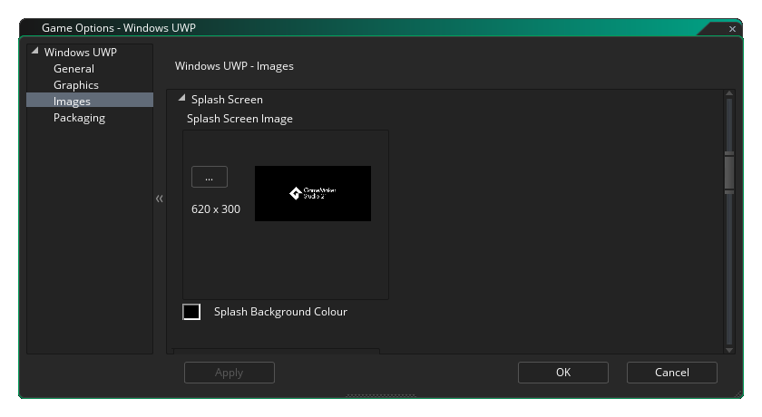
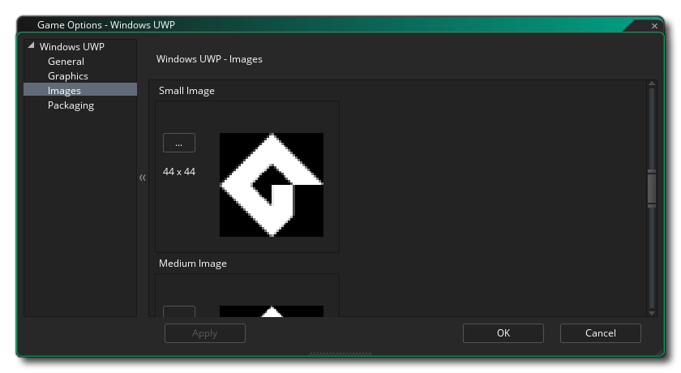

In diesem Abschnitt werden die verschiedenen verfügbaren Optionen beschrieben, mit denen Sie steuern können, wie Ihre UWP-Spieleprojekte (Universal Windows Platform) kompiliert werden. Die verschiedenen Abschnitte sind:
Im allgemeinen Abschnitt der UWP-Optionen können Sie die Produktinformationen einstellen:
- Anzeigename: Gibt den Anzeigenamen für die App an, der den Benutzern angezeigt wird (diese Zeichenfolge ist lokalisierbar).
- Paketname: Dies ist der Name des Pakets, das Sie erstellt haben, und sollte, dass für den Entwicklerschlüssel verwendet übereinstimmen, die Sie für das Spiel erstellt haben (siehe Abschnitt Verpackung, unten).
- Paketanzeigename: Dies ist der "Kurzname" des Pakets und sollte idealerweise mit dem Anzeigenamen identisch sein
- Publisher-Anzeigename: Dies ist der Name Ihres Unternehmens oder der Person, die Sie als Spiele-Publisher zuordnen möchten.
- Version: Die Versionsnummer Ihres Spiels.
Nach dem Einrichten können Sie die verschiedenen Ausrichtungen auswählen, auf denen Ihr Spiel ausgeführt werden kann, um die beste Benutzererfahrung zu erzielen. Die verfügbaren Optionen sind:
- Landschaft
- Porträt
- Querformat
- Hochformat
Standardmäßig werden alle diese Optionen ausgewählt, und Sie sollten die Auswahl aufheben, die Sie nicht benötigen.
Nachdem Sie die Ausrichtungsoptionen eingestellt haben, können Sie die verschiedenen Berechtigungen, die Ihre UWP-App benötigt, mit den folgenden Optionen signalisieren:
- Internet-Berechtigung aktivieren: Markiert das Spiel als mit dem Internet verbunden. Dies ist standardmäßig deaktiviert.
- Mikrofonberechtigung aktivieren: Zeigt an, dass das Spiel Zugriff auf das Mikrofon des Geräts hat. Dies ist standardmäßig deaktiviert.
- IAP-Sandbox aktivieren: Markiert das Spiel als Sandkasten in App-Käufen. Dies ist standardmäßig deaktiviert.
Schließlich haben Sie zwei Optionen zum Festlegen der Ziel- und Mindestversion der Windows-Plattform. Im Allgemeinen möchten Sie diese nicht berühren und sollten ihre Standardwerte beibehalten. Wenn Sie jedoch Build-Probleme haben (insbesondere wenn Sie das standardmäßig installierte Windows SDK nicht installieren können), müssen Sie diese ändern zu dem, was Sie installiert haben), können Sie diese auf andere Werte setzen. Wenn Sie nicht sicher sind, welche Werte festgelegt werden sollen, erstellen Sie ein neues UWP-Projekt in Visual Studio, und prüfen Sie, worauf die Werte festgelegt werden.
Die Grafikoptionen sollten Sie konfigurieren, um zu bestimmen, wie die Grafikkarte Ihres UWP-Zielgeräts in Ihrem Spiel verwendet wird. Die folgenden Optionen stehen zur Änderung zur Verfügung:
- Farben zwischen Pixeln interpolieren: Aktiviert die Interpolation, wodurch die Pixel im Wesentlichen "geglättet" werden. Für gestochen scharfe Pixelgrafiken sollte diese Einstellung deaktiviert sein. Wenn Sie jedoch schöne Alpha-Blends und geglättete Kantengrafiken haben, sollten Sie diese Einstellung lieber beibehalten. Dies ist standardmäßig deaktiviert.
- Cursor anzeigen: Wenn diese Option aktiviert ist, wird der Standard-OS-Cursor in Ihrem Spiel angezeigt. Wenn diese Option deaktiviert ist, wird der Mauszeiger, solange sich der Mauszeiger über dem Spielfenster befindet, nicht sichtbar sein, es sei denn, Sie haben einen als Teil des Spielprojekts erstellt (standardmäßig aktiviert).
- Vollbild starten: Wenn diese Option aktiviert ist, startet das Spiel im Vollbildmodus. Beachten Sie, dass dies möglicherweise nur auf einem Windows 10 Desktop-Gerät sichtbare Auswirkungen hat.
- Vollbildwechsel zulassen: Wenn diese Option aktiviert ist, können Sie das Spiel mit den entsprechenden Tastenkombinationen zwischen Vollbildmodus und Fenstermodus wechseln. Beachten Sie, dass dies möglicherweise nur auf einem Windows 10 Desktop-Gerät sichtbare Auswirkungen hat.
- Verwenden Sie die Synchronisierung, um ein Abreißen zu vermeiden: Diese Option ist vorhanden, wurde jedoch aufgrund der Tatsache, dass die UWP-Plattform erfordert, dass V-Sync immer aktiv ist, inaktiviert.
- Skalierung: Hier können Sie auswählen, ob das Seitenverhältnis beibehalten werden soll (dh ein 4: 3-Raum wird bei einem 16: 9-Format als "Letter Box" bezeichnet) oder vollständig skaliert werden (das Bild wird so vergrößert, dass es in den gesamten Bildschirm passt).
WARNUNG! Durch das Ausschalten der Anwendungsoberfläche werden alle in den UWP-Spieloptionen festgelegten Skalierungsoptionen deaktiviert, bis sie wieder eingeschaltet werden. Weitere Informationen finden Sie unter Die Anwendungsoberfläche.Schließlich gibt es noch die Möglichkeit, die Größe der Textur-Seite einzustellen. Die Standardgröße (und die meisten kompatiblen) ist 2048x2048, aber Sie können zwischen 256x256 und 8192x8192 wählen! Es gibt auch eine Schaltfläche mit der Bezeichnung Ansicht, die die Textur-Seiten für diese Plattform generiert und ein Fenster öffnet, in dem Sie sehen können, wie sie aussehen. Dies kann sehr nützlich sein, wenn Sie die Struktur der Textur-Seiten sehen möchten und verhindern möchten, dass Textur-Seiten größer (oder kleiner) als erforderlich sind.
HINWEIS: Beachten Sie, dass Ihr Spiel mit UWP-Geräten mit niedrigeren Spezifikationen umso weniger kompatibel ist, je größer die Textur-Seite ist.
Der erste Teil des Abschnitts " Bilder " dient zur Definition des Logo des Spiels. Dies ist im Wesentlichen das Symbol, das Ihr Spiel im UWP-Ökosystem verwenden wird, und es ist erwähnenswert, dass diese Bilder transparent sein können .png Dateien. In diesem Fall werden sie über die in diesem Abschnitt angegebene Hintergrundfarbe gezeichnet. Diese Hintergrundfarbe wird auch auf die Schaltflächenfarbe in allen Dialogfeldern der App und auf die Seite mit der App-Beschreibung im Bereich Auf Geräten speichern angewendet. 
Nach dem Einrichten des Logos können Sie den Begrüßungsbildschirm für das Spiel einstellen. Dies ist der Bildschirm, der angezeigt wird, wenn Sie Ihr Spiel starten, und er darf nicht größer als 620 x 300 Pixel sein und kann wie das Logo transparent sein .png Datei. In diesem Fall wird die Hintergrundfarbe, die Sie auswählen, dafür verwendet. 
Schließlich haben Sie die Möglichkeit, die verschiedenen Kacheln festzulegen, die Ihr Spiel auf den verschiedenen Geräten verwendet, auf denen UWP ausgeführt werden kann. Sie können Folgendes einstellen:
- Das kleine Kachelbild ist das Logo, das neben dem App-Namen in der Suchleiste und in anderen Bereichen der Benutzeroberfläche angezeigt wird. Es sollte 44 x 44 Pixel sein.
- Das mittlere Kachelbild sollte ein Bild mit 71 x 71 Pixeln sein.
- Das nächste Kachelbild ist das Kachelzeichen für das Store-Logo und sollte 50 x 50 Pixel betragen.
- Die Breitbildkachel ist diejenige, die erscheint, wenn die Kachel im Breitformat ist und 310 x 150 Pixel groß sein sollte. Wenn dieses Bild nicht bereitgestellt wird, kann die Kachel nur im quadratischen Format angezeigt werden und kann keine Benachrichtigungen akzeptieren, die auf breiten Vorlagentypen basieren. Da der Benutzer entscheiden kann, welches Format die Kachel verwendet, wird empfohlen, dass Sie eine breite Bildkachel verwenden. Beachten Sie außerdem, dass die Kachel anfangs im Breitformat angezeigt wird, wenn eine Breitbildkachel bereitgestellt wird.
- Die große Bildkachel ist das große Live-Kachelformat und sollte 310 x 310 Pixel betragen. Beachten Sie, dass dies nur unter Desktop-Betriebssystemen verwendet wird.
Beachten Sie, dass GameMaker Studio 2 über ein Project Image Generator- Tool verfügt, mit dem automatisch alle Bilder erstellt werden können, die für die verschiedenen Zielplattformen benötigt werden, auf denen Ihr Spiel kompiliert wird. Wenn Sie dieses Tool verwenden, sollten Sie die erstellten Bilder überarbeiten, um sicherzustellen, dass sie Ihren Anforderungen entsprechen.
GameMaker Studio 2 einen Standard- Developer Key für WindowsUWP, es wird jedoch empfohlen, einen eigenen zu generieren und hier darauf hinzuweisen. Erstellen Sie dazu ein leeres Projekt in Visual Studio Express, und speichern Sie eine Kopie der automatisch generierten Datei an einem sicheren Ort *.pfx Datei, die im leeren Projekt enthalten sein wird (dies ist der Entwicklerschlüssel). Sie sollten das dann verknüpfen *.pfx Datei hier.
Nachdem Sie sich mit der Datei verbunden haben, sollten Sie auf die zugehörige Schaltfläche " Installieren" klicken und dann den Anweisungen in der Eingabeaufforderung folgen, die geöffnet wird. Wenn Sie dies nicht tun, schlägt die Verwendung der Schaltflächen Ausführen / Debuggen (oder Drücken von F5) fehl und Ihr Spiel kann nicht auf der UWP-Plattform getestet werden. Wenn Sie jedoch die Option Create Executable verwenden, wird der Zertifizierungsinstallationsprozess automatisch gestartet *.pfx muss noch registriert werden).
HINWEIS: Wenn Sie Ihre App in den Store hochladen möchten, müssen Sie die richtige Version anzeigen *.pfx für deinen titel. Dazu wird Ihre App mit dem Windows Store in Visual Studio verknüpft, wodurch Visual Studio eine neue generiert *.pfx speziell für die App. Es ist auch erwähnenswert, dass Sie jede App mit dem Windows Store in Visual Studio verknüpfen können. Dies bedeutet, dass Sie der Windows Store-App ein leeres Projekt zuordnen und das generierte Projekt einfach kopieren können pfx an einen sicheren Ort, der dann in den UWP-Spieloptionen verwendet werden kann. Anweisungen dazu finden Sie in der YoYo Games Knowledge Base.In diesem Abschnitt müssen Sie auch den Publisher-Namen angeben, der zum Generieren des Signaturzertifikats verwendet wurde. Vor der Eingabe sollte immer "CN =" stehen, zB: CN=YoYoGames.
Im Abschnitt Xbox Live der UWP-Spieloptionen können Sie Ihr UWP-Projekt für die Verwendung auf der Xbox One-Konsole aktivieren. Wenn Sie das Projekt für die Xbox hier aktivieren, können Sie Folgendes ausführen, wenn das Projekt auf einer Xbox One ausgeführt wird:
- Melden Sie sich von der App aus bei Xbox Live an
- Verwenden Sie die Xbox Live-Benutzeridentität auf irgendeine Weise im Projekt (z. B. Anzeigen des Gamertags oder des Spielerbilds).
Bevor Sie diese Schritte ausführen können, müssen Sie jedoch sicherstellen, dass Sie das Kontrollkästchen Xbox Live aktivieren aktiviert haben. Wenn Sie Teil des Microsoft Creators-Programms sind, sollten Sie auch die Option Creators Program App aktivieren. Wenn Sie Teil des Creators-Programms sind, müssen Sie die Titel-ID und die Dienstkonfigurations-ID hinzufügen (weitere Informationen hierzu finden Sie bei Microsoft ).
Beachten Sie, dass derzeit Xbox Live - Funktionalität in Ihrem Projekt zu testen, müssen Sie anstatt Run Executable erstellen verwenden, wie die UWP Xbox Ausgabe des Windows Store Signaturzertifikat verwenden muss, die Ihnen als Teil der Verpackung info (siehe oben) statt die temporäre GameMaker Studio 2, die mit GameMaker Studio 2 geliefert wurde. GameMaker Studio 2 wird beim Drücken von Run verwendet.
Wenn Sie XBox Live aktiviert haben, können Sie die XBox Live-Funktionen in Ihrem Projekt verwenden.